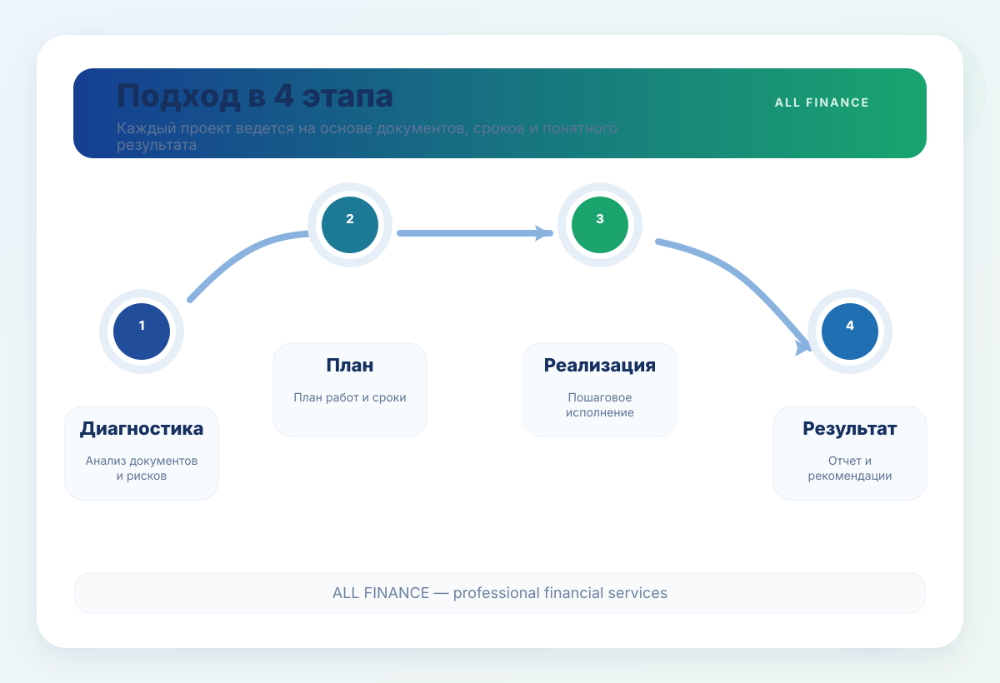
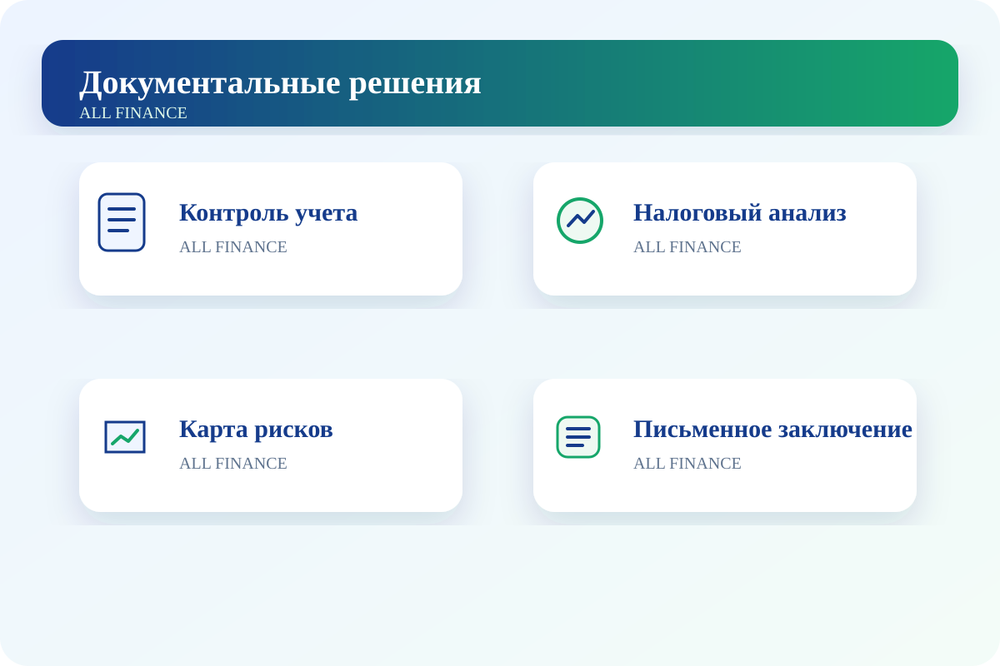

Бухгалтерский аутсорсинг
Полное ведение первичных документов, банковских и кассовых операций, заработной платы, расчетов с контрагентами и обязательной отчетности.
Подробнее →Бухгалтерия, налоги, аудит, кадры и услуги 1С — с четкими сроками, документированным подходом и ответственными специалистами.
Каждое направление организуется ответственным специалистом в соответствии с требованиями бухгалтерского, налогового и трудового законодательства и завершается документированным результатом.
Полное ведение первичных документов, банковских и кассовых операций, заработной платы, расчетов с контрагентами и обязательной отчетности.
Подробнее →Практические рекомендации по налоговому режиму, НДС, налогу на прибыль, налогу с оборота, льготам и налоговым последствиям сделок.
Подробнее →Подготовка документов, анализ расхождений и обоснование позиции компании при камеральных, выездных проверках и налоговом аудите.
Подробнее →Восстановление утраченных, ошибочных или неполных периодов учета на основании документов и приведение отчетности в порядок.
Подробнее →Ведение трудовых договоров, приказов, отпусков, штатных документов и учета работников в соответствии с трудовым законодательством.
Подробнее →Независимая проверка учета, активов, расходов, договоров и внутреннего контроля с рекомендациями по снижению рисков.
Подробнее →Понятные управленческие отчеты по доходам, расходам, денежному потоку, задолженности и рентабельности.
Подробнее →Настройка и проверка базы 1С, внедрение импорта и интеграций, автоматизация бухгалтерских процессов.
Подробнее →Каждый проект ведется по принципу: диагностика, план, реализация и итоговый результат.

Изучаются документы, состояние учета и возможные риски.
Определяются объем работ, сроки и ответственные.
Согласованные задачи выполняются поэтапно.
Руководству передаются отчет, реестр и рекомендации.
Профессиональный порядок работы по восстановлению учета, подготовке к проверкам, внутреннему аудиту и управленческой отчетности.

Стоимость уточняется в окончательном коммерческом предложении с учетом объема документов и операций.
Познакомьтесь с нашей командой специалистов в области бухгалтерии, финансов, маркетинга и продаж.


Оставьте свои данные. Заявка автоматически будет отправлена в Telegram-бот.